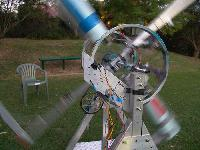

T-Shirt hurling contest: day 2
Peter Moore and his mates from Cenqua in Australia were the second contestants in the T-Shirt contest. Their entry was a contraption (I don't know a better word: Rube Goldberg would have been thrilled) that used centrifugal force to propel the shirts, and a pile of electronics to figure out when to let go. If you'd like to get a better look, they have a large collection of photos up on the web. The release mechanism involved infrared sensors on the spinning wheel that operated the solinoids that released the shirts. The sensors were used to receive trigger information from the computer and a funky wire-wrapped board.The early prototypes were pretty straightforward. No electronics. Real reliable. What they ended up with was a total victory for creeping featurism.
They managed to launch a reasonable number of shirts, and got great range, but the vast majority of the shirts were randomly spewed all over the stage and backdrop. The infrared sensors were their undoing, and an interesting case study in just how hard testing is.
They had done a lot of testing, in lots of circumstances. They had had problems the night before with the stage lights having enough IR to trigger the device prematurely. They had tuned and corrected for that. But it was the large, professional-grade photographic flashes that did it. No one had fired off one of those in the vicinity of the launcher during any test runs.
Just as in every branch of engineering, "shit happens", and it's incredibly hard to predict.
| June 28, 2005 |